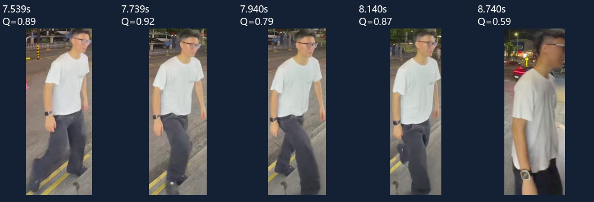
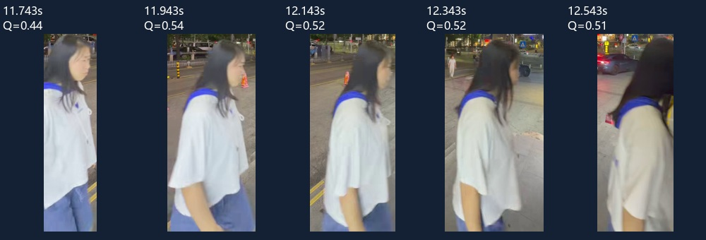
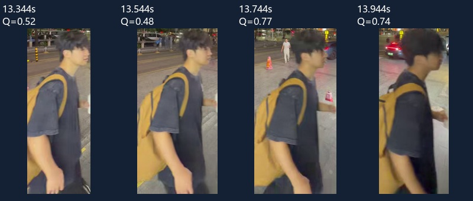

清晰度、尺寸、遮挡、时间间隔和外观差异联合选帧。编号沿用既有注册表；外观关联不是自然人身份确认。
existing_source_track

关键帧按源时间排列，前/侧/背角度不作未经验证的保证。
existing_source_track

关键帧按源时间排列，前/侧/背角度不作未经验证的保证。
existing_source_track

关键帧按源时间排列，前/侧/背角度不作未经验证的保证。
{
"status": "completed",
"source": {
"path": "C:\\Users\\12908\\Desktop\\黑客松\\安克_26.10.17\\code - anker\\test_video_new\\site_20261016\\A\\2_input.mp4",
"sha256": "a5a9379457b98536f217cf64dbbe62ca459ed9f2250667bc3f07121be6761fc8",
"enrollment_recipe_sha256": "06d62108e4573b97c044023d5cdd8193c9163d10d8f927c7305bf852c79c1a21"
},
"archive_path": "C:\\Users\\12908\\Desktop\\黑客松\\安克_26.10.17\\code - anker\\data\\person_enrollment\\archive.json",
"weights_sha256": "e96cbd20ee9cc3c6dcc0e8f4fbba8c8069d47647a5a96a59ce381fb785c54f68",
"source_duration_ms": 14911.677777777777,
"local_tracks": 4,
"actions": {
"insufficient_quality_frames": 1,
"existing_source_track": 3
},
"selected_raw_keyframes_checked": 14,
"sampling_fps": 15,
"feature_fps_at_most": 5,
"enrollment_recipe": {
"a_video": {
"sampling_fps": 15,
"feature_fps": 5,
"minimum_track_ms": 500
},
"a_tracker": {
"imgsz": 960,
"detection_conf": 0.1,
"track_high_thresh": 0.25,
"track_low_thresh": 0.1,
"new_track_thresh": 0.25,
"match_thresh": 0.8,
"lost_seconds": 1.2,
"cpu_threads": 4
},
"a_quality": {
"min_height": 120,
"min_width": 32,
"min_blur": 18.0,
"min_detection_conf": 0.3,
"joint_conf": 0.35,
"minimum_torso_joints": 2,
"max_overlap": 0.35,
"minimum_selection_quality": 0.4,
"blur_saturation": 150.0,
"size_saturation": 0.6,
"edge_penalty": 0.65
},
"a_keyframes": {
"minimum": 3,
"maximum": 5,
"min_gap_ms": 200,
"candidate_bin_ms": 200,
"candidate_limit": 48,
"consistency_similarity": 0.55,
"consistency_fraction": 0.6,
"quality_weight": 0.75,
"diversity_weight": 0.15,
"time_weight": 0.1
},
"archive_matching": {
"reuse_threshold": 0.75,
"reuse_margin": 0.1,
"frame_threshold": 0.7,
"minimum_support": 3,
"possible_duplicate_threshold": 0.6,
"simultaneous_overlap_ms": 100,
"maximum_templates": 5,
"top_k_templates": 3
},
"osnet": {
"weights": "models/reid/osnet_x0_5_msmt17.pth"
},
"keyframe_policy": "clear_representatives_v3"
},
"quality_counters": {
"rejected_low_confidence_occlusion_or_torso": 2,
"quality_candidates": 21,
"rejected_low_selection_quality": 2,
"rejected_small_or_blurred_crop": 5
},
"numbering": "max existing ID + 1; legacy IDs reserved; existing photos not replaced",
"elapsed_s": 30.007,
"api_calls": 0,
"identity_human_verified": false
}